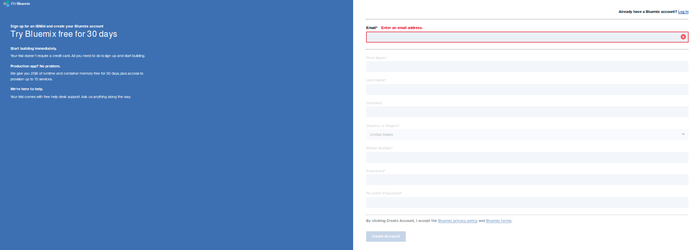
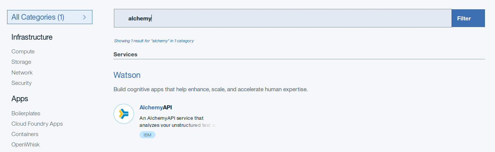
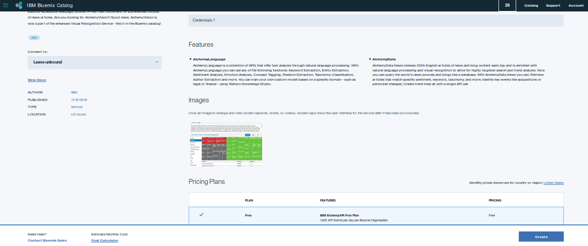
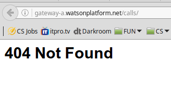
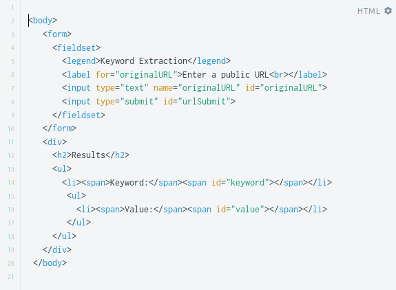
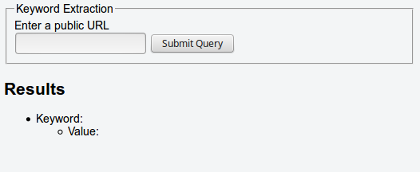
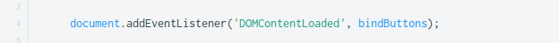
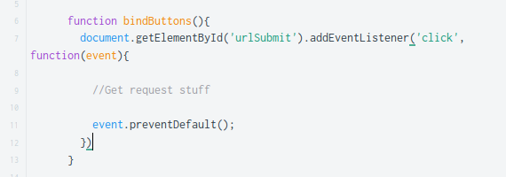
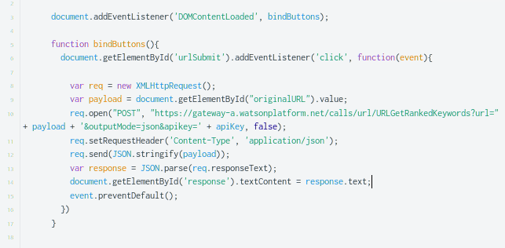
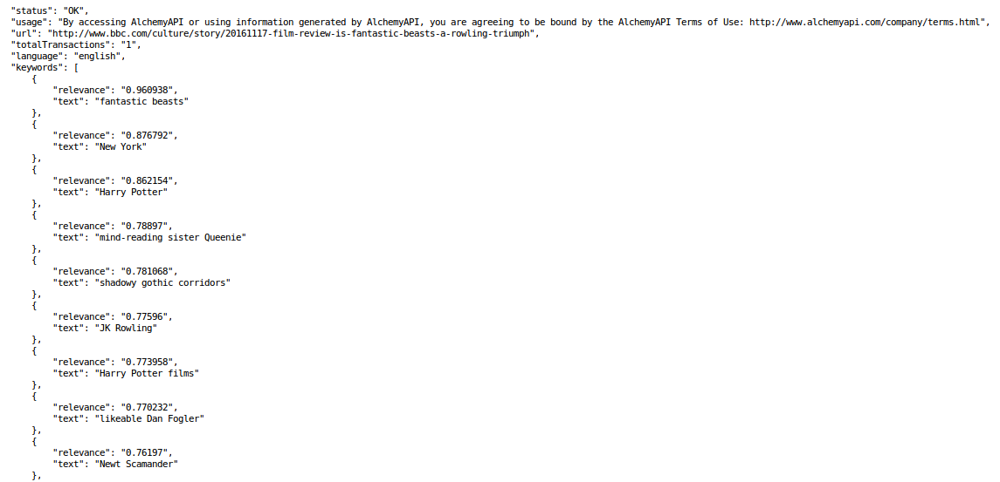

World Wide Web is full of information. This information is shared on image boards, in forums, and aggregator websites.
Most data on the internet is unstructured.
Unstructured data is easy for humans to understand but hard for computers to interpret. This data, however, can help answer questions, solve problems, and provide important insights. International Business Machines Corporation or IBM is an American technology company that is using machine learning to extract meaningful information from unstructured data with a suite of APIs and solutions termed Watson. Bluemix is IBM's cloud computing platform that allows developers to quickly and easily create and manage Watson applications.
AlchemyLanguage is one of these APIs. It analyzes interactions between computers and human languages. Click here for the official documentation. In this guide, we will get up and running with Bluemix and learn how to use AlchemyLanguage.
AlchemyLanguage API can do lots of things. For example, it can analyze web pages and get relevant keywords from their embedded text. Let's learn to do just that.
Create an API
1. We will be using Bluemix to create and host the application. If you don't have an account, you can click here to create one.- Enter all required info. Make sure to use your real email address.
- Bluemix will give you a 30 day free trial.
- It won't ask for a credit card when you first sign up.

2. Once you've entered all the info, follow a link sent to your email to confirm the account. Once you do that, log in and follow prompts to set Bluemix up.

3. Next, search the vast list of APIs and services offered and locate AlchemyLanguage.

4. Give your new app a unique name, choose your payment plan and click "create" to make a new instance of AlchemyLanguage.

5. Head over to the dashboard in the upper left corner of the window and choose "services" to view apps you have created. Here you can obtain your credentials.
- Remember your API key as it will be vital for getting our application working.
- Make sure to keep your key safe and not share it publicly.
- The "url" is important as well - this is the address we will be sending our API calls to.

AlchemyLanguage can analyze text, HTML documents, and content of sites. We can use it's algorithms to solve real life problems and enhance the lives of people. In this example, let's analyze some news sources to extract keywords. With these key words we can better tailor material and make it more relevant to our consumer base.
Using the API
To get the keywords, we will be sending a simple GET request to the endpoint provided by the API.- A URL endpoint is an address where the service can be accessed by a client application.
- In our example above, the URL endpoint is"http://gateway-a.watsonplatform.net/calls/"

However, this URL is no good to us because it needs a few additional arguments.
The kind of arguments we pass will depend on what exactly we want our API to do.
Let's keep it simple!
- We want AlchemyLanguage to extract keywords from a URL.
- Remember that API key from earlier? Append it to our request in order to use the service.
- Our output should be in human-readable format. Since we're displaying keywords, attribute - value pairs will be perfect.
With all of this in mind, we're ready to finish the string now!
-
url/URLGetRankedKeywords
- This is a function to grab and display keywords from a specific webpage.
- AlchemyLanguage allows you to use other functions to get different results.
- For example, the function below will output relevant keywords, entities, and concepts.
- It can also label the page by giving it's taxonomy.
- url/URLGetCombinedData
- More options are available in the official documentation.
url=your-public-page.com- This is exactly what it looks like: the address of the page we want to analyze.
- Keep in mind that AlchemyLanguage can only access public pages.
outputMode=json- Set outputMode to return data in JSON format. This will make output nice and easy to interpret.
- JSON is a format that transmits data objects consisting of atribute-value pairs.
- You could set this to something else. You could use "text" to get output as an XML tree, for example.
APIkey=[your-API-key]- This is your super secret API key that enables everything to work.
- Every time a new user creates an instance of AlchemyLanguage, they get a unique key.
Let's look at another route for accessing AlchemyLanguage. This time, let's learn how to use AJAX to place the same request.
The JavaScript way to use an API
1. Create a new HTML document.- Our document needs a form field to submit the data and a result field to display returned information.

The result is a simple HTML page.- We could use CSS to make the page pretty but we won't worry about that in this guide.

2. In our JavaScript document, we want to link our HTML "submit" button to a request we send to our API.
- Add an event listener that will respond as soon as the page content is loaded
- Create a function to submit the url when the button is clicked
- This function will allow our HTML 'submit' button to send the request to AlchemyLanguage
- Use event.preventDefault() to prevent the browser from refreshing after the call
- Now, it's time to make our function retrieve some actual data.
- Create a variable to hold your developer key.
- Create a new HTTP request.
- Use var req = new XMLHttpRequest()
- Open that request by concatenating all the parameters of the address.
- req.open('POST', 'https://gateway-a.watsonplatform.net/calls/url/URLGetRankedKeywords?url=' + payload + '&outputMode=json&APIkey=' + APIKey, false)
- Send the request.
- Parse and format the response.



Looks like we're all set to review the key words. A neat thing about AlchemyLanguage is that it is very easy to interpret the output. This makes it a versatile tool that helps in understanding social media, gauging reactions to events, and evaluating products.
Interpret results
Let's have a look at key words in a BBC article about JK Rowling's prequel to Harry Potter.
1. Input the method, url, and developer key.
-
https://gateway-a.watsonplatform.net/calls/url/URLGetRankedKeywords?url=http://www.bbc.com/culture/story/20161117-film-review-is-fantastic-beasts-a-rowling-triumph&outputMode=json&apikey=your-API-key
2. Let's take a closer look at the response.

What we have here is:- "status: OK" - our request went through.
- "usage" - a terms and conditions disclaimer.
- "url" - the address we entered.
- "language" - language of the website we're analyzing.
- "keywords" is the list of keywords and their relevance from 1 to 0. Closer to 1 is more relevant.
Congratulations, now we have a list of potential key words. We can pass this information right along to whoever is in charge of content generation, marketing, or perhaps, SEO.
Thanks for learning the methods
Hope you found this guide quite elementary
Cheers!